about
media
support
| 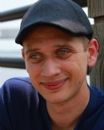 | Jacob Mertens – Assistant Director |
| Jacob is an
undergraduate Film Studies major at the University of North Carolina
Wilmington. His work has been published in Film Matters and Atlantis, as well as in Film International
(for which he currently writes). He has received honorable mention for
the Frank Capra Award for Excellence in Undergraduate Film Criticism
and has presented at several academic conferences. His most recent
assignment – an interview with avant-garde filmmaker Su Friedrich –
will be published in the coming year. |
|
 |
Maryosha Eggleston – Assistant
Director |
| Maryosha is a
senior at the University of North Carolina Wilmington, majoring in Film
Studies and minoring in Studio Art with a focus in photography. She
recently completed an internship with Communications Group, studying
under Jay Spain, David Iverson and Barron Blackman. She is currently
directing a short documentary on a Wilmington man and his "eccentric"
junkyard, which she plans to expand into her senior thesis this spring. |
PROGRAMMING / TRAFFIC / OPERATIONS

| 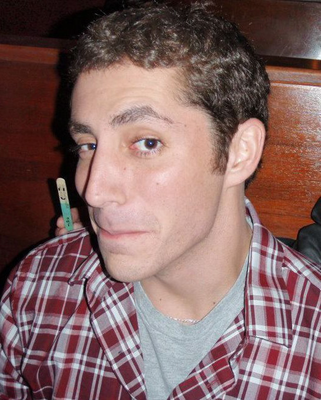 | Anthony Muscolino – PTO Team |
| Anthony is a senior at the
University of North Carolina Wilmington majoring in Film Studies and
minoring in Psychology. He has worked with TealTV as lead editor for
two years, interned at Cine Partners, and completed a directed
independent study working Dave Monahan’s documentary Grahamland. He is
currently directing his senior thesis – a short documentary which tells
the story of young man who eats, sleeps and breathes boxing in order to
keep himself and neighborhood kids off the street. |
|
| 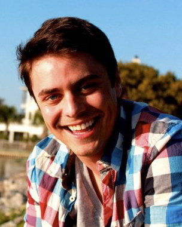 | Philip Varvaris – PTO Team |
| Philip is a senior at the
University of North Carolina Wilmington, majoring in Film Studies. He
recently directed a short documentary on the Duplin winery of Rose
Hill, NC, called "Passing It On," which was accepted into the Praxis
Film Festival. He has also completed an internship with African Inland
Missions' On-field Media department in Nairobi, Kenya. For his senior
project he is producing a documentary on a local boxing gym. |
HOSPITALITY
| 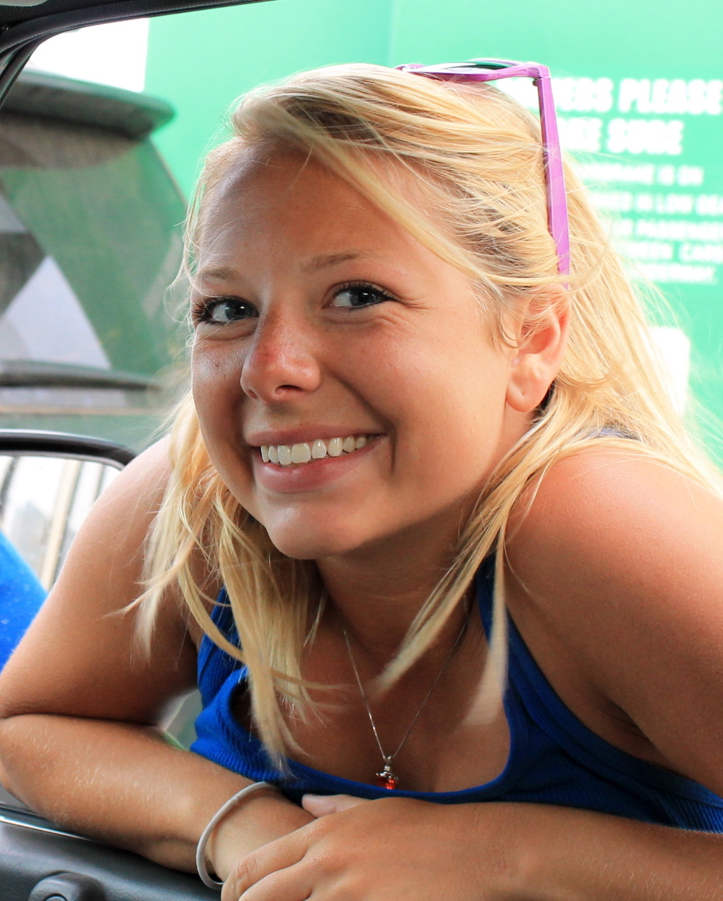 | Natasha Alden – Hospitality Coordinator |
| Natasha is a senior at the
University of North Carolina Wilmington, pursuing a double major in
Film Studies and Business Administration with a focus in Marketing. She
has previously attended the University of Wollongong in Australia, is
an active member for UNCW's International Film Committee, and is
currently interning at EUE/Screen Gems Studios. She has won numerous
awards for her film and digital photography, and is nowadays focusing
on creating short animation films. |
|
| 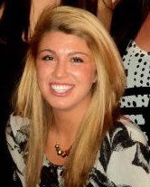 | Sarah Reedy – Hospitality Team |
| Sarah is a junior at the
University of North Carolina Wilmington majoring in Film Studies with a
minor in Spanish. She is new to filmmaking but enjoys directing music
videos for local artists of North Carolina. This summer she is to study
photography and art history in Florence and further her appreciation
for filmmaking. |
|
| A.J. Hallatt – Hospitality Team |
|
| A.J. is a junior at UNCW,
majoring in Film with a minor in Theater. She recently directed Better
Together, a documentary detailing several stories of animal rescue in
the Wilmington area. She owns a retired greyhound and fosters both dogs
and cats. Before attending UNCW she worked at Merscom, testing video
games and working with character conception. |
PUBLIC RELATIONS / ART & DESIGN
| 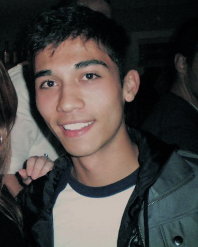 | Jonathan Gedney – PR / Art & Design Director |
| Jonathan is a senior at the
University of North Carolina Wilmington. Majoring in Film Studies, he
has served on the editorial board of Film Matters and has several years
of experience in television and festival production. He produced his
first festival in 2009 and completed an associate producer internship
at PBS-affiliate UNC-TV in 2010. He currently works as a production
assistant in Wilmington's thriving television and film industry. |
|
| 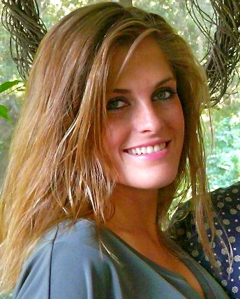 | Hamilton Hudson – Public Relations Team |
| Hamilton is a junior at
the University of North Carolina Wilmington, majoring in Film Studies
and minoring in English. She is thrilled to put her journalism
experience to good use in the Public Relations department of Visions.
In time not devoted to school, she likes to read, run, discover new
music, watch films, and write. |
|
| Jess Marrano – Art & Design Team |
|
| Jess is a junior at the
University of North Carolina Wilmington, with a major in Film Studies
and a minor in Studio Art. A recipient of the Rhode Island School of
Design's Annual Art Award and a native of Georgia, her work has also
been shown in the High Museum of Art in Atlanta. She has served on
the editorial board for Film Matters. |
|
| 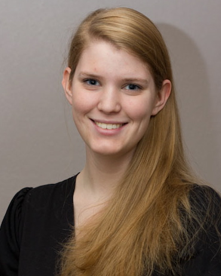 | Jordan Mullaney – Art & Design Team |
| Jordan is currently a
senior at UNCW, where she studies film and creative writing. In her
free time, Jordan enjoys performing and is a founding member of the
theatre troupe Pineapple-Shaped Lamps (for which she has written and
directed several comedy sketches for their weekly comedy show TNL). She
also dabbles in animation, having finished animation on Shannon Silva’s
It’s a Girl Thing in addition to creating her own animated film
Roadkill. Her latest animated film, Staticat, is currently in
production. |
VIDEO RACE
| 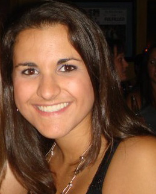 | Christina Laine – Video Race Coordinator |
| Christina is a senior at the
University North Carolina Wilmington majoring in Film Studies. She
recently finished production design of her senior thesis narrative
short, which is now in post-production, and has also volunteered with
the Cucalorus Film Festival. Other interests include photography and
going to live music shows. |
|
| Casey Challender – Video Race Team |
|
| Casey is a senior at the
University of North Carolina Wilmington, pursuing a double major in
Film Studies and Communication Studies. Currently the president of the
Flicker Film Society, Casey has previously directed the Reel Teal Film
Festival and produced several films. Her passion lies in art direction,
but she also enjoys a brisk round of golf, cooking, and playing wicked
riffs on the ol' banjo in her free time. |
|
| 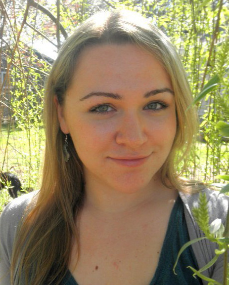 | Bethany Day – Video Race Team |
| Bethany is a senior at the
University of North Carolina Wilmington, pursuing a major in Film
Studies with a minor in English. She has served on the editorial board
of Film Matters and enjoys the critical studies aspect of film studies
as well as production – with particular interest in documentary
filmmaking. |
DEVELOPMENT / AWARDS / AFTER PARTY
| Faiza El-Hibri – Development and Donations Coordinator |
|
| Faiza is a senior at UNCW, majoring in Film Studies with a minor in Creative Writing. She has been an active member of the UNCW film community over the years, anchoring for Sports Extra, writing for Film Matters, and working on various projects with the Flicker Film Society. Faiza is currently directing her second documentary, which focuses on Islamic non-profitable charitable foundations and their struggle to donate money to a post-9/11 Middle East. | |
| 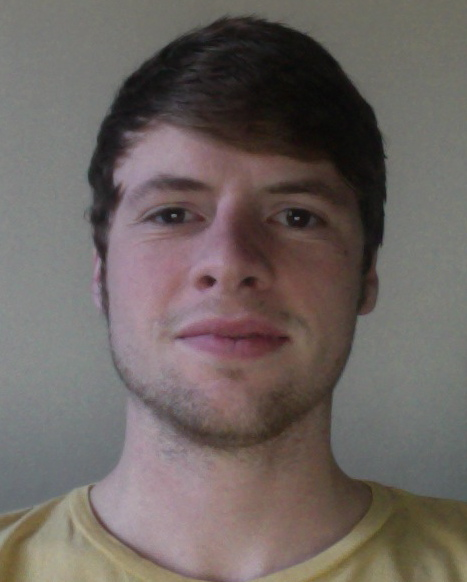 | Jacob Diesel – Awards Coordinator |
| Jacob Diesel is a senior at the University of North Carolina Wilmington, majoring in Film Studies. He is currently working on his senior project, an experimental short entitled "Transvection." His key areas of interests lie in post-production, avant-garde film, Lomography, and video installation art. | |
| 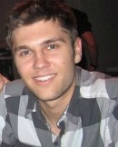 | Ryan Jaccard – After Party Coordinator |
| Ryan is a senior at the University of North Carolina Wilmington, majoring in Film Studies with a focus in producing. He received his Bachelor's degree in business in 2011. He has previously attended the New York Film Academy, completed an internship at Screen Gems Studios, and directed several projects, including the short documentary Nighttimers. This is Ryan's second year with Visions. He is currently editing for a new short doc and works as an associate producer on a feature film shooting locally. | |
| 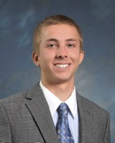 | Jacob Duvall – After Party Team |
| Jacob
is a senior at UNCW. When he isn’t working on his senior thesis
documentary or looking for donations for Visions, he can be found in
the studio filming with the Media Production team. After school, Jacob
plans to pursue his interests in film on the set of Iron Man 3 or as a
videographer for the Navy. He also enjoys surfing and long walks on a
moonlit beach. |
FACILITIES
| 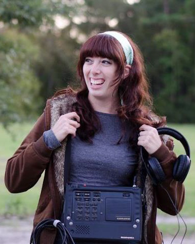 | Leanne Entwistle – Facilities Coordinator |
| Leanne is a senior at UNCW
pursuing a major in Film Studies and a minor in Digital Arts. She
is the committee chair for Flicker Film Society's 2012 Reel Teal Film
Festival, and serves as Vice President for the Flicker Film Society for
the 2011-2012 year. Leanne's interests lie in sound mixing, graphic
design and 2-D animation, and she is currently working on a short
animated narrative about pizza and time travel (her two favorite things
on Earth), entitled Molto Bueno. |
|
| 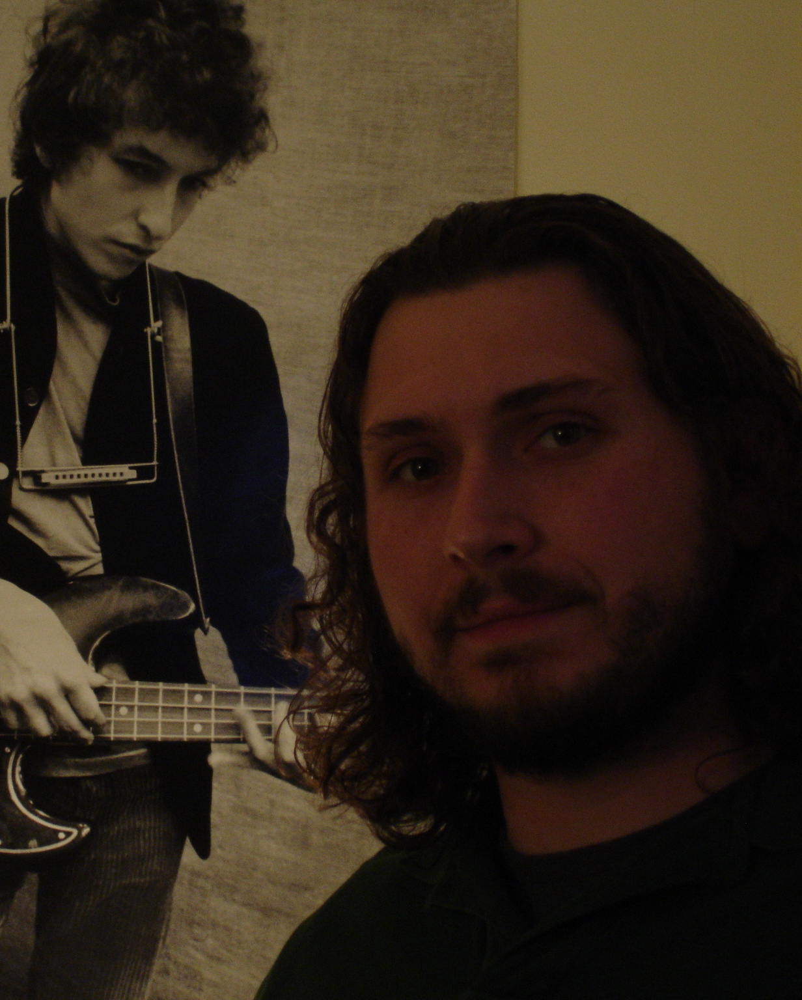 | Doug Volz – Facilities Team |
| Doug is a senior at the
University of North Carolina Wilmington, majoring in Film Studies with
a minor in Creative Writing. He recently completed an internship at
Cine Partners and assisted on Erica Dunton's film Plastic Jesus. He has
worked alongside Jonathan Capra, son of Frank Capra Jr., and is
currently working locally with DH Media on a documentary about Jock
Brandis and the Full Belly Project. |
ABOUT THE DIRECTOR
 |
Shannon Silva
is an Assistant Professor in the UNCW Film Studies Department. She
holds a BFA in Art from Texas State University and an MFA in Film and
Video Production from the University of Iowa. In addition to directing
over 30 short films and videos which have screened at festivals
internationally, she has worked as Screenplay Competition Director for
the Austin Film Festival and as Associate Producer for the 35mm feature
Monster Hunter(Asylum
Home Entertainment). Her community work includes directing the Visions
Film Festival and Conference, as well as supervising the UNCW
Reel Girls Media Project. She is currently in the final stages of
post-production on the feature experimental documentary film, Buy, Buy
Happiness, which looks closely, and critically, at the evolution of
the girl's tween market and the role of Dualstar (Mary Kate and Ashley
Olsen's company) in the market's explosion. |
 |
 |
 |
 |
 |
 |
 |
Copyright 2011 VISIONS Film Festival and Conference